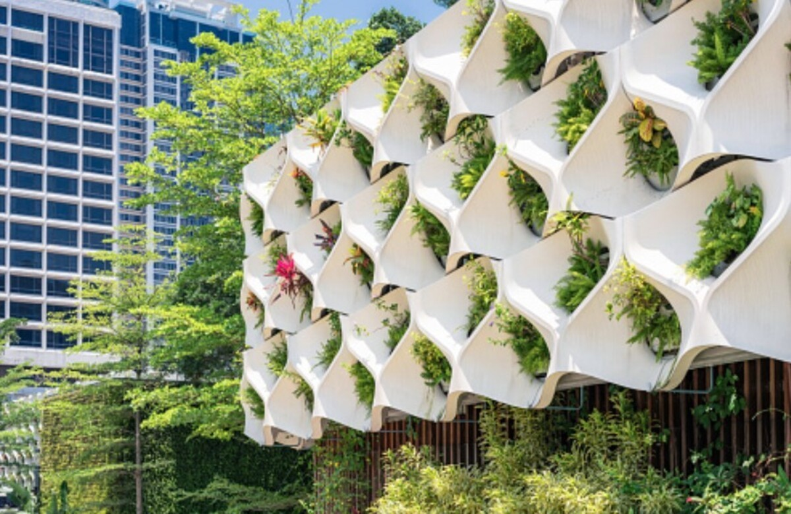

Sustainable Development Goals 9 and 11 are closely similar in many ways.
SDG 9 focuses on building infrastrucutre while SDG 11 has a focus on creating sustainable within communities.
While we work towards achieveing both of these goals, both of these goals should be considered when creating solutions.
When developing infrastructure, there should also be thought going into creating sustainable and long-lasting products.
This is why sustainable buildings are talked about in architecture as they are popping up in cities and becoming more popular.

This is a picture of a building which has already incorporated sustainble features.
The UN is heavily encouraging developers and contractors to consider both SDGS when they are
building or proposing new building plans.
As a result of this goal, countries have started developing laws which contractors must follow.
Both of these goals are very important and should be deeply considered. The impact of the implementation
of these two goals could potentially have the impact on millions of people, bringing them out of poverty and
giving them sturdy homes to live in. This is huge, considering the amount of countries which are affected by poverty
today. The impact of these goals is massive, which is why it is so important why people who are in positions
to make decisions of whether or not to make infrastrucutre more long-lasting and sustainable, should definitely
lean towards creating a better future for those who need it the most
In Conclusion, there are dramatic efforts being done by individuals, companies, organizations, and
even the goverments of the world to move in a positive direction, and create a better world to live in.